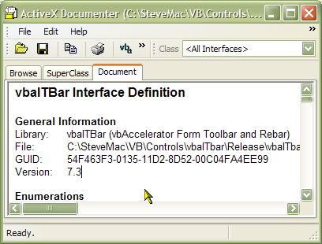

ActiveX Documenter Source (349K)
ActiveX Documenter Source (349K)
 VB5 ActiveX Documenter (148K)
VB5 ActiveX Documenter (148K)
 VB6 ActiveX Documenter (138K)
VB6 ActiveX Documenter (138K)
 Bugs: 2 / 2
Bugs: 2 / 2
 Issues: 0 / 0
Issues: 0 / 0
 Questions: 0 / 0
Questions: 0 / 0
 23 Feb 2003
23 Feb 2003
Fixed hacks to determine default interface and events; you can now generate documentation for any TLB
Types exposed by Type Libraries are now documented correctly; previously types appeared as Classes with constant members.
Documentation associated with Types or enumerated members in Type Libraries now included.
Documentation generation now 100x quicker for large type libraries.
 Subclassing Without The Crashes
Subclassing Without The Crashes
 Two code only solutions for displaying Common/Dialogs
Two code only solutions for displaying Common/Dialogs
 vbAccelerator Status Bar Control
vbAccelerator Status Bar Control
 Ole Guid and interface definitions (OleGuids.Tlb)
Ole Guid and interface definitions (OleGuids.Tlb)
 PopupMenu DLL - Create Unlimited Popup Menus
PopupMenu DLL - Create Unlimited Popup Menus
 vbAccelerator Toolbar and CoolMenu Control v3.5
vbAccelerator Toolbar and CoolMenu Control v3.5
 vbAccelerator TabStrip Control
vbAccelerator TabStrip Control

ActiveX Documenter
This VB application uses TLBINF32.DLL (the one used by VB's object browser) to investigate the interfaces of compiled ActiveX documents. It acts as a complement to the object browser in VB, allowing you to look at object interfaces without needing to run VB or to add a reference to the object. In addition, it produces well formatted documentation (RTF or XHTML) for an object.
This release allows you to:
- Quickly browse an ActiveX object's members.
- Copy the member definitions as fully formatted VB code to your own application.
- Create Rich Text or fully-hyperlinked XHTML documentation using the procedure attributes built into the ActiveX object's Type Lib.
This is a must download if you're trying to create help files for your ActiveX objects.
Installation Instructions
There are no special requirements for installing the executable, just that you have TLBINF32.DLL and the Visual Basic runtimes installed. TLBINF32.DLL is shipped with all editions of Visual Basic including VBA. I do not think that there is any redistribution agreement for it, so it is not available on this site.
I have only tested the application with COMCTL32.DLL v4.72 (IE4 version) and above, but it should run just as happily with the one shipped with Win95.
About the Code
There's quite a lot of source code for this project. It contains implementations of the following controls and features in VB:
- Common Controls Toolbar and Rebar
- XP-Style CoolMenus
- Common Controls Tab Strip
- Common Controls Tooltip
- Common Controls StatusBar
- Rich Edit control (either version 1 or version 2)
In addition, it uses my classes for registry access, creating Most Recently Used (MRU) file lists, Common Dialogs and building large strings quickly.
.If you're just interested in how to use TLBINF32.DLL, you will find all the code used to do it in the main form of the application. Be warned, however, the code for this could probably be neater (although it is now better than the pre-2003 release...)
Anyway, I hope this is of some use to you. It has been for me - I completed all my class documentation for a large VB project at work in about 5 minutes with it!